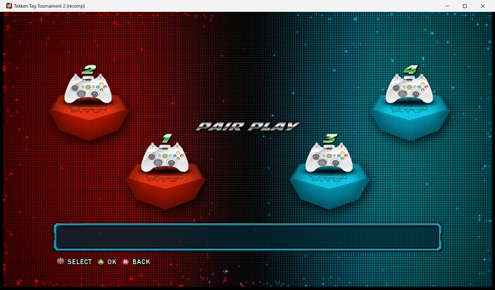

TTT2 Local Lounge
The Complete Guide — Install & Play
4 phones = 4 controllers
1 laptop
TV via HDMI
Wi-Fi only · no internet needed
2v2 tag team
Tekken Tag Tournament 2 · Version 1.0
What you need
| Item | Details |
|---|
| Windows gaming laptop | Windows 10 or 11, connected to your TV with an HDMI cable |
| Up to 4 smartphones | Any Android or iPhone — they become the controllers |
| Home Wi-Fi | Laptop and phones on the same network. No internet needed to play. |
| Your Tekken Tag Tournament 2 PC game | Your own legal copy — you will tell the system where its .exe is during setup |
| Your license key | One key from the seller. It works on this laptop only, forever. |
AInstallation — step by step
Step 1 — Run the installer you received
1
Double-click TTT2_Local_Lounge_SETUP.bat
(it may be on your Desktop or in Downloads).
- Your browser may warn about
.bat files — this is normal. Choose Keep / Run anyway.
- Windows SmartScreen may appear — click More info → Run anyway.
2
Watch it extract — a black window opens, extracts everything into a
TTT2_Local_Lounge folder next to itself, then the installer deletes itself.
That is normal — the folder is now your copy.
Result: a folder like C:\Users\you\Downloads\TTT2_Local_Lounge\ containing console\ and START_HERE.txt.
Step 2 — Install Python (once)
3
Go to python.org/downloads and download Python.
- Run the installer.
- CRITICAL: tick “Add python.exe to PATH” on the first screen — the system cannot work without it.
- Click Install Now, wait for it to finish.
Step 3 — Run the automatic setup (once)
4
Open the console\ folder and double-click INSTALL.bat
— it does everything for you in 5 steps:
| Setup step | What happens / what you do |
|---|
| 1/5 Python | Detects Python. If missing, it opens the download page — install with “Add to PATH”, then run INSTALL.bat again. |
| 2/5 Libraries | Downloads the server libraries automatically (needs internet for this one time). |
| 3/5 Controller driver | Downloads and installs the ViGEm Bus driver. Windows will ask for permission — click Yes. |
| 4/5 Game path | It asks: “DRAG your Tekken Tag Tournament 2 .exe into this window” — drag the game's .exe from its folder into the black window and press Enter. |
| 5/5 Verification | Checks everything and prints SETUP COMPLETE! |
Tip: If anything ever breaks later, run INSTALL.bat again — it repairs libraries, driver and game path in one go.
Step 4 — Activate your license (once, forever)
5
Double-click console\start_server.bat.
The dashboard opens in your browser and shows a lock screen.
6
The lock screen shows a “laptop fingerprint” — a code like
9F3E-E2FB-EA8F-6C53. Send that code to your seller (a WhatsApp photo is fine).
7
Your seller sends you back a key like TTT2-XXXXXXXX-XXXXXXXX.
Type it into the LICENSE KEY box and press Activate.
Done! The full dashboard unlocks. This key works on this laptop only — you will never need it again.
Keep the server window open (the black window titled “TTT2 Local Console Server”) while you play. Closing it turns off the controllers.
BConnect the phones
1
Make sure every phone is on the same Wi-Fi as the laptop.
2
On each phone's browser, open its player link. The exact addresses are printed on the dashboard and in the server window:
| Phone | Open | Plays |
|---|
| Phone 1 | http://LAPTOP-IP:8000/player1 | RED team |
| Phone 2 | http://LAPTOP-IP:8000/player2 | RED team |
| Phone 3 | http://LAPTOP-IP:8000/player3 | BLUE team |
| Phone 4 | http://LAPTOP-IP:8000/player4 | BLUE team |
Faster way: open
http://LAPTOP-IP:8000 on one phone and scan the
QR codes on the dashboard — each QR opens that player's link.
3
On each phone: rotate to landscape and tap the fullscreen button.
Check the dashboard — every card should now show ● connected.
Button layout: press the ✏️ button on a phone to open the layout editor — drag buttons, resize, save. Layouts auto-save per phone.
If a phone disconnects: just reopen the same link — it reclaims its slot. The server releases stuck buttons automatically when a phone drops.
The controller
| Control | In menus | In fight |
|---|
| D-PAD / NUB | move the cursor | move / crouch / jump |
| A | confirm / OK | left punch |
| B | back / cancel | right punch |
| X | — | left kick |
| Y | — | right kick |
| LB / RB | — | TAG — bring your partner in! |
| START | join / pause | pause |
| BACK | select / random team | — |
Golden rule — who is Player 1? Controllers are claimed in first-press order. Whoever presses a button first in the game becomes Player 1, the next press becomes Player 2, etc. So P1 must press START first at the title screen, then the others in order.
CHow to play — the 4-player 2v2 (PAIR PLAY)
1
On the dashboard press Start game — Tekken opens on the TV (HDMI).
2
Title screen: Player 1 presses START on their phone. If an auto-save notice appears, P1 presses A.

The main menu
3
Select OFFLINE MODE (press A), then move down to the last row, PAIR PLAY, and press A.

OFFLINE MODE → PAIR PLAY (last row)
4
The stones screen. Four stones: two red (left), two blue (right).
Every player now joins one at a time, in player order:
| Order | Each player does |
|---|
| P1 | Press START → move LEFT/RIGHT onto a red stone → press A → a dialog appears (“Exiting player select. Continue anyway?”) — press A (OK) to advance. This dialog is normal! |
| P2 | Press START → move to the other red stone → A → A on the dialog |
| P3 | Press START → move to a blue stone → A → A on the dialog |
| P4 | Press START → move to the last blue stone → A → A on the dialog |

All four seated — RED team: P1 + P2 · BLUE team: P3 + P4
5
Character select: press A to leave the stones.
One picker per side drives the selection: P2 picks for the red side, P3 for the blue side (portraits update live).
Confirm both fighters — the match begins!

PAIR PLAY character select
6
Fight! The active fighter battles while the partner waits.
Press LB or RB (TAG) to swap your teammate in — tag combos, walls, rage: everything works like the console version.

Live 2v2 tag action
7
After a match: follow the on-screen prompts (A = continue / rematch).
To leave PAIR PLAY: a picker pad presses B, then A to confirm — back to the main menu.
DOther game modes
VS BATTLE — classic 1v1
- Main menu → OFFLINE MODE → VS BATTLE
- P1 and P2 each pick a character
- Fight — the original two-player mode
TEAM BATTLE — up to 8 characters per team
- Main menu → OFFLINE MODE → TEAM BATTLE
- P1 presses START and sits on red (one human per side here — the other side is CPU)
- On the team-size row, press LEFT/RIGHT to set 1–8 characters per team, then A
- Pick your team and fight the elimination
- BACK = random team — instant fun

TEAM BATTLE — “2 PLAYERS ON TEAM” set with LEFT/RIGHT
Single-player
ARCADE, GHOST, TIME ATTACK, SURVIVAL, PRACTICE, FIGHT LAB — all fully playable with P1's phone.
ETroubleshooting
| Problem | Fix |
|---|
| Phone page won't load | Server not running — run start_server.bat; check laptop + phones are on the same Wi-Fi |
| Dashboard says “LICENSE REQUIRED” | Send the laptop fingerprint to your seller, enter the key you receive |
| “denied: slot in use” on a phone | Another tab owns that slot — close it and reopen the link |
| A button stuck in-game | The phone dropped while held — reopen the player link; the server auto-releases |
| P2/P3/P4 don't respond in menus | Pads claim in first-press order — P1 must press START first at the title screen |
| The keyboard types into the game | The laptop keyboard is merged into Player 1 — don't type while playing |
| INSTALL.bat fails at libraries | Check internet once, then rerun INSTALL.bat |
| Game doesn't start | Check the game path in console\settings.json — rerun INSTALL.bat step 4 to set it again |
Have fun — and tag often! 🥊